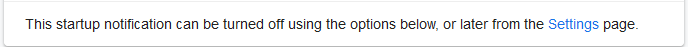
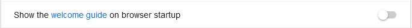
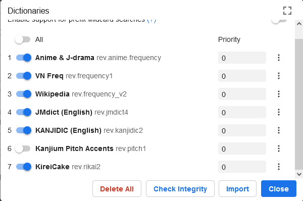
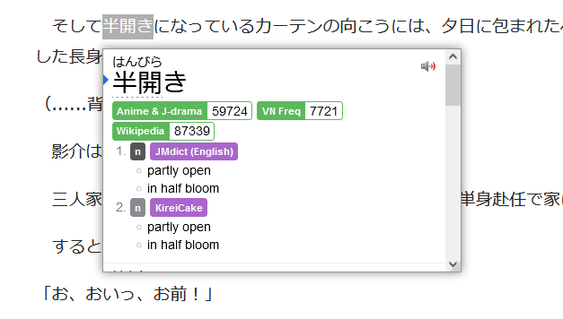

Yomichan
O que é Yomichan e pra que serve?
Yomichan é um extenção código-aberto para navegadores baseados em Chromium ou no Firefox que permite você olhar o significado das palavras no dicionário local rapidamente apenas precionando Shift em cima da palavra.
Instalação
Primeiro baixe a versão compatível com seu navegador:
Após isso você será direcionado para uma página de boas vindas, então clique em Settings em baixo da página ou clique na extenção e depois na engrenagem.

Em seguida, desative a seguinte opção para que toda hora que for abrir o navegador, não ser direcionado para as configurações da extenção.

Dicionários
A extenção ainda não está funcionando porque ela não possui um dicionário, para isso você deve baixar um(ou vários se quiser). Aqui o passo-a-passo do que se fazer:
- Escolha os dicionários nesse link (Recomendo que baixe todos para testar)
- Vá na aba
Dictionariesno Yomichan e cliqueConfigure installed and enabled dictionariese depois emimport. - Coloque todos os dicionários que baixou e aguarde uns minutinhos.
- Vá testando os dicionários 
- (Extra) Tem um dicionário japonês para português traduzido pelo Deepl aqui
Pronto! Agora é só apertar Shift e terá o significado da palavra.
